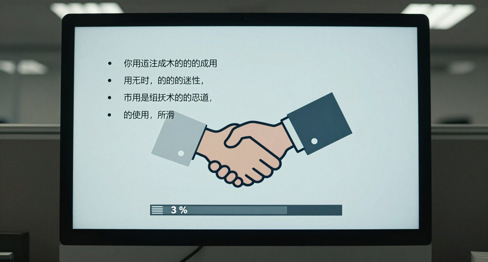
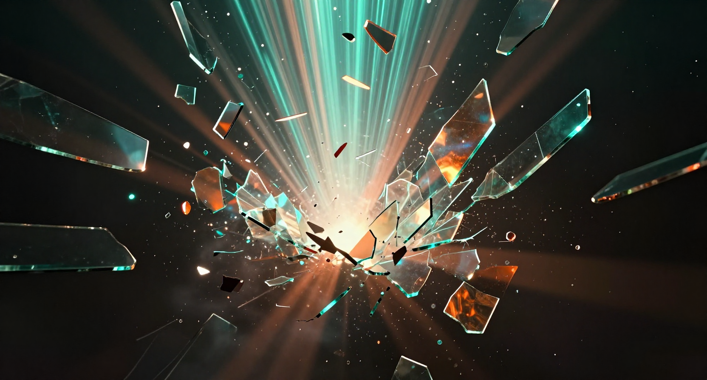
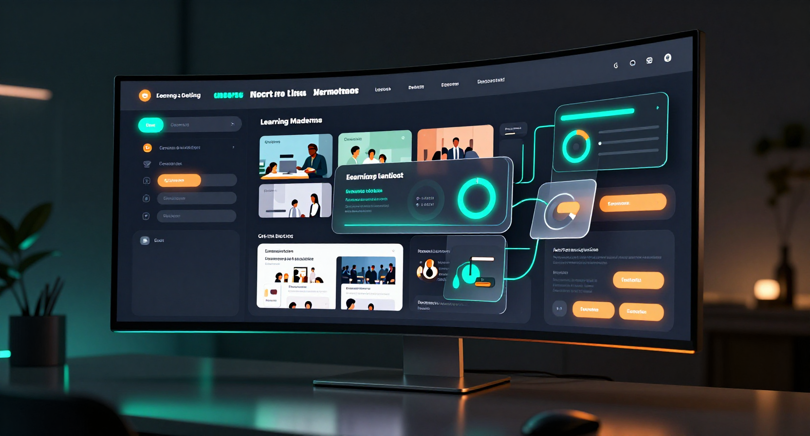
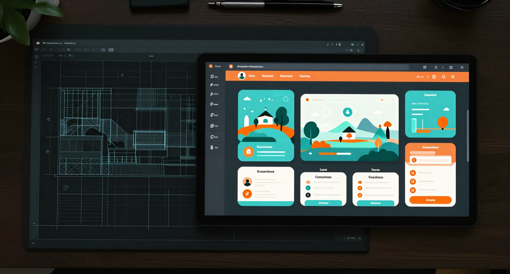
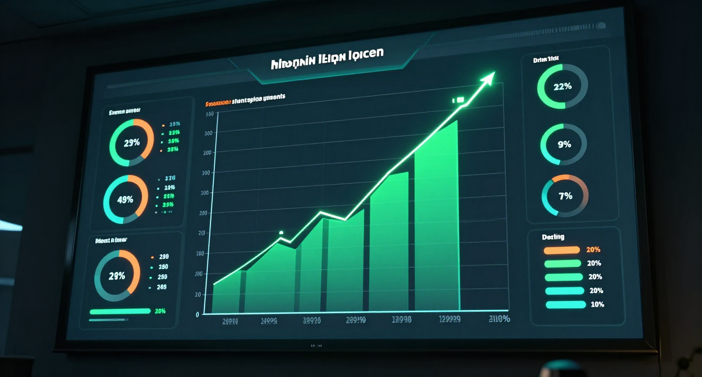

"When The Design Is Right"
The video opens in a world everyone recognizes — the dull, lifeless corporate training everyone has endured. Gray screens, bullet points, forced clicking. Then it breaks. The screen glitches, shatters, and through the cracks, color bleeds in. We enter the DXF world — immersive, interactive, alive. The contrast sells itself. The viewer feels the difference before a single word is spoken.
A confident British male voice (MaleArcher) narrates the full 30 seconds — guiding the viewer from problem to transformation to brand. The narration and visuals work together throughout. Every frame earns its place.
"You have the expertise. We create the experience."
"Most training is built to check a box. Not to change behavior. Seventy percent? Forgotten in a day. What if training was something people actually remembered? We fuse instructional design, UX, and AI to create experiences that are immersive, accessible, and measurable. From blueprint to delivery. Analytics that prove results. You have the expertise. We create the experience. Design X Factor."

0:00 — 0:02 F01
0:05 — 0:06 F05
0:06 — 0:08 F06
0:15 — 0:17 F10
0:19 — 0:20 F12"Most training is built to check a box. Not to change behavior. Seventy percent? Forgotten in a day."
Tone: Calm but pointed. Stating facts that everyone knows but nobody says. Slightly provocative.
"What if training was something people actually remembered?"
Tone: The pivot. Genuinely curious. Emphasis on "actually." This is where the energy shifts.
"We fuse instructional design, UX, and AI to create experiences that are immersive, accessible, and measurable. From blueprint to delivery. Analytics that prove results."
Tone: Confident, building energy. Each phrase is a capability proof point. Pace picks up slightly.
"You have the expertise. We create the experience. Design X Factor."
Tone: The payoff. Warm, definitive. "Design X Factor" lands as a statement, not a sales pitch. Mic drop.
Modern cinematic electronic. Atmospheric but driving. Not generic corporate — emotional, human. Think ODESZA "A Moment Apart", Labrinth "Still Don't Know My Name", M83 "Midnight City" intro energy.
0:00-0:04 — Quiet/tense (boring training world)
0:05 — DROPS (the break, music enters)
0:06-0:19 — Builds through transformation, energy rising
0:19 — PEAK (results moment)
0:20-0:24 — Pulls back, voice takes over
0:24-0:30 — Resolves, warm conclusion
BPM: 100-110. Not too fast — confident, not frantic.
Key: Minor → Major resolution. The key change at 0:20 mirrors the emotional shift.
1. Flat monotone narrator "Welcome to Module 1..."
2. Rapid mouse clicks (rhythmic)
3. Bass hit (impact)
4. Digital glitch/crackle
5. Glass shatter
6. Whoosh (split screen slide)
7. Mechanical lock-in clicks
8. Soft bass pulse (heartbeat)
The following frames will be generated using ComfyUI Z-Image to give the design team a visual reference for each key moment. These are concept frames, not final video frames — they represent the mood, color, and composition target for each beat.